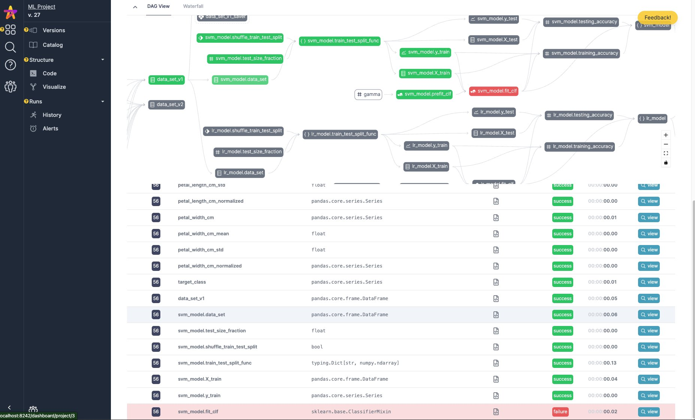
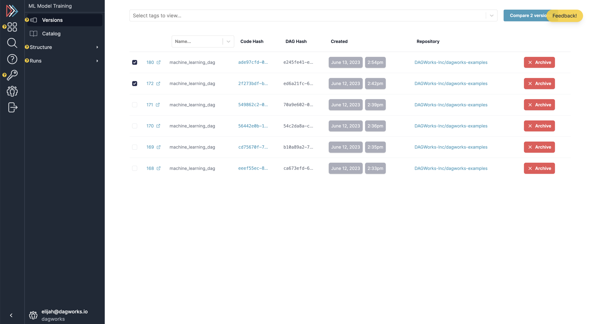
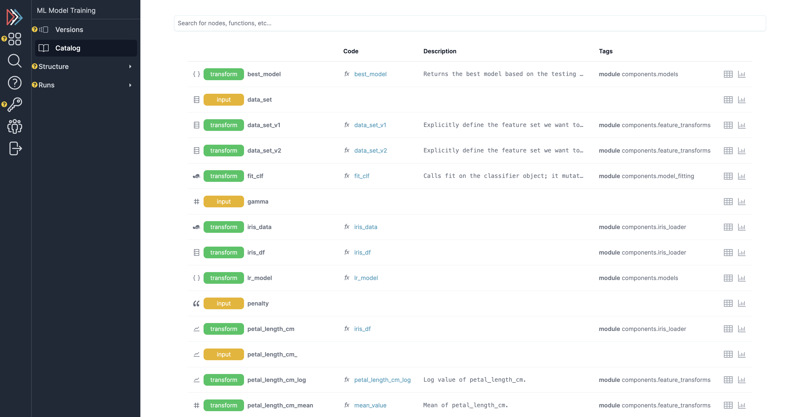
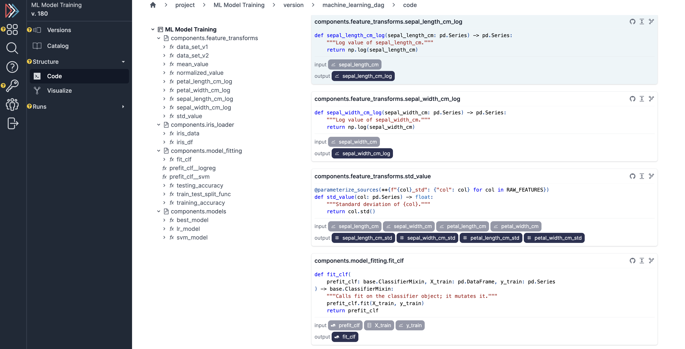
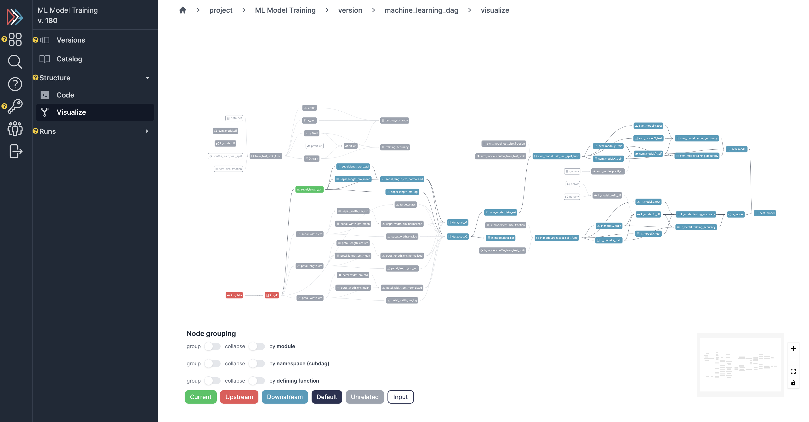
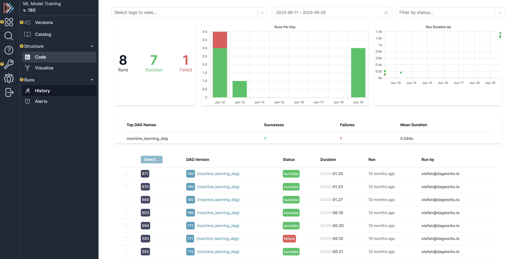
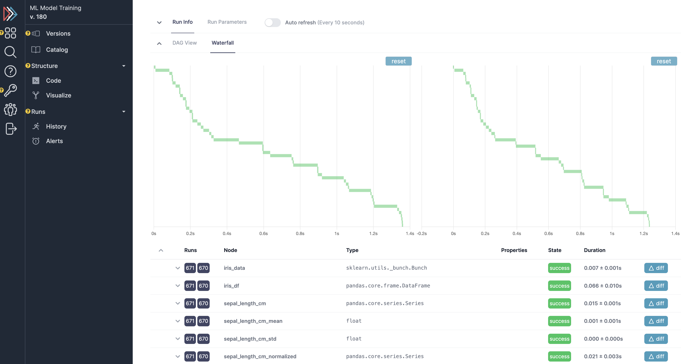
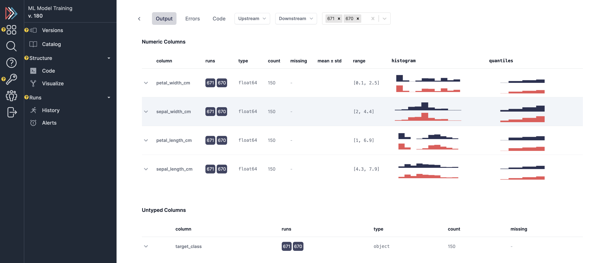

UI Overview¶
Apache Hamilton comes with a fully open-source UI that can be run both for local deployment and on a remote server. The UI consists of the following features:
Telemetry for hamilton executions – both on the history of executions and the data itself.
A feature/artifact catalog for browsing/connecting executions of nodes -> results.
A dataflow (i.e. DAG) visualizer for exploring and looking at your code, and determining lineage.
A project explorer for viewing curating projects and viewing versions of your Apache Hamilton dataflows.
In short, the Apache Hamilton UI aims to combine a large swath of MLOps/data observability systems in one simple application.
—
The Apache Hamilton UI has two modes: 1. Run locally using sqlite3 2. Run on docker images with postgres (meant for deployment)
Local Mode¶
To run the hamilton UI in local mode, you can do the following:
pip install "sf-hamilton[ui,sdk]"
hamilton ui
# python -m hamilton.cli.__main__ ui # on windows
This will launch a browser window in localhost:8241. You can then navigate to the UI and start using it! While this can potentially handle a small production workflow, you may want to run on postgres with a separate frontend/backend/db for full scalability and a multi-read/write db.
Docker/Deployed Mode¶
The Apache Hamilton UI can be contained within a set of Docker images. You launch with docker-compose, and it will start up the UI, the backend server, and a Postgres database. If you’d like a quick overview of some of the features, you can watch the following:
Note: if you run into the “Invalid HTTP_HOST” error, then please set the environment variable HAMILTON_ALLOWED_HOSTS=”*” (or comma separated list of domains of choice) for the backend docker container. You can inject this via -e or in the docker-compose[-prod].yml file itself.
Install¶
If you’d like a video walkthrough on getting set up, you can watch the following:
As prerequisites, you will need to have Docker installed – you can follow instructions here.
Clone the Apache Hamilton repository locally
git clone https://github.com/apache/hamilton
Navigate to the
hamilton/uidirectory
cd hamilton/ui
Execute the installation script with the following command
./run.sh
This will:
Pull all Docker images from the Docker Hub
Start a local Postgres database
Start the backend server
Start the frontend server
This takes a bit of time! So be patient. The server will be running on port 8242.
Then navigate to
http://localhost:8242in your browser, and enter your email (this will be the username used within the app).
Building the Docker Images locally¶
If building the Docker containers from scratch, increase your Docker memory to 10gb or more – you can do this in the Docker Desktop settings.
To build the images locally, you can run the following command:
# from the hamilton/ui directory
./dev.sh --build
This will build the containers from scratch. If you just want to mount the local code, you can run just
./dev.sh
Self-Hosting¶
If you know docker, you should be good to go. The one environment variable to know is HAMILTON_ALLOWED_HOSTS, which you can set to * to allow all hosts, or a comma separated list of hosts you want to allow.
To host the UI on a subpath, set REACT_APP_HAMILTON_SUB_PATH to the subpath required. For example, to run on https://domain.com/hamilton:
- REACT_APP_HAMILTON_SUB_PATH=/hamilton
Make sure that the sub path environment variable begins with / if set.
Please reach out to us if you want to deploy on your own infrastructure and need help - join slack. More extensive self-hosting documentation is in the works, e.g. Snowflake, Databricks, AWS, GCP, Azure, etc.; we’d love a helm chart contribution!
Running on Snowflake¶
You can run the Apache Hamilton UI on Snowflake Container Services. For a detailed guide, see the blog post Observability of Python code and application logic with Apache Hamilton UI on Snowflake Container Services by Greg Kantyka and the Apache Hamilton Snowflake Example.
Get started¶
Now that you have your server running, you can run a simple dataflow and watch it in the UI! You can follow instructions in the UI when you create a new project, or follow the instructions here.
First, install the SDK:
pip install "sf-hamilton[sdk]"
Then, navigate to the project page (dashboard/projects), in the running UI, and click the green + New DAG button.
Remember the project ID – you’ll use it for the next steps.
Existing Apache Hamilton Code¶
Add the following adapter to your code if you have existing Apache Hamilton code:
from hamilton_sdk import adapters
tracker = adapters.HamiltonTracker(
project_id=PROJECT_ID_FROM_ABOVE,
username="USERNAME/EMAIL_YOU_PUT_IN_THE_UI",
dag_name="my_version_of_the_dag",
tags={"environment": "DEV", "team": "MY_TEAM", "version": "X"}
)
dr = (
driver.Builder()
.with_config(your_config)
.with_modules(*your_modules)
.with_adapters(tracker)
.build()
)
Then run your DAG, and follow the links in the logs! Note that the link is correct if you’re using the local mode – if you’re on postgres it links to 8241 (but you’ll want to follow it to 8241).
I need some Apache Hamilton code to run¶
If you don’t have Apache Hamilton code to run this with, you can run Apache Hamilton UI example under examples/hamilton_ui:
# we assume you're in the Apache Hamilton repository root
cd examples/hamilton_ui
# make sure you have the right python packages installed
pip install -r requirements.txt
# run the pipeline providing the email and project_id you created in the UI
python run.py --email <email> --project_id <project_id>
You should see links in the logs to the UI, where you can see the DAG run + the data summaries captured.
Features¶
Once you get to the UI, you can navigate to the projects page (left hand nav-bar). Assuming you have created a project and logged to it, you can then navigate to view it and then more details about it. E.g. versions, code, lineage, catalog, execution runs. See below for a few screenshots of the UI.
Dataflow versioning¶
Select a dataflow versions to compare and visualize.
Assets/features catalog¶
View functions, nodes, and assets across a history of runs.
Browser¶
View dataflow structure and code.
 Run tracking + telemetry¶
View a history of runs, telemetry on runs/comparison, and data for specific runs:
  SDK Configuration¶
This section documents HamiltonTracker configuration options.
Changing where data is sent¶
You can change where telemetry is logged by passing in hamilton_api_url and/or hamilton_ui_url to the HamiltonTracker constructor. By default, these are set to localhost:8241/8242.
from hamilton_sdk import adapters
tracker = adapters.HamiltonTracker(
project_id=PROJECT_ID_FROM_ABOVE,
username="USERNAME/EMAIL_YOU_PUT_IN_THE_UI",
dag_name="my_version_of_the_dag",
tags={"environment": "DEV", "team": "MY_TEAM", "version": "X"},
hamilton_api_url="http://YOUR_DOMAIN_HERE:8241",
hamilton_ui_url="http://YOUR_DOMAIN_HERE:8242" # if using docker the UI is on 8242.
)
dr = (
driver.Builder()
.with_config(your_config)
.with_modules(*your_modules)
.with_adapters(tracker)
.build()
)
Changing behavior of what is captured¶
By default, a lot is captured and sent to the Apache Hamilton UI.
Here are a few options that can change that - these can be found in hamilton_sdk.tracking.constants. You can either change the defaults by directly changing the constants, by specifying them in a config file, or via environment variables.
Here we first explain the options:
Option |
Default |
Explanation |
|---|---|---|
CAPTURE_DATA_STATISTICS |
True |
Whether to capture any data insights/statistics |
MAX_LIST_LENGTH_CAPTURE |
50 |
Max length for list capture |
MAX_DICT_LENGTH_CAPTURE |
100 |
Max length for dict capture |
DEFAULT_CONFIG_URI |
~/.hamilton.conf |
Default config file URI. |
To change the defaults via a config file, you can do the following:
[SDK_CONSTANTS]
MAX_LIST_LENGTH_CAPTURE=100
MAX_DICT_LENGTH_CAPTURE=200
# save this to ~/.hamilton.conf
To change the defaults via environment variables, you can do the following, prefixing them with HAMILTON_:
export HAMILTON_MAX_LIST_LENGTH_CAPTURE=100
export HAMILTON_MAX_DICT_LENGTH_CAPTURE=200
python run_my_hamilton_code.py
To change the defaults directly, you can do the following:
from hamilton_sdk.tracking import constants
constants.MAX_LIST_LENGTH_CAPTURE = 100
constants.MAX_DICT_LENGTH_CAPTURE = 200
tracker = adapters.HamiltonTracker(
project_id=PROJECT_ID_FROM_ABOVE,
username="USERNAME/EMAIL_YOU_PUT_IN_THE_UI",
dag_name="my_version_of_the_dag",
tags={"environment": "DEV", "team": "MY_TEAM", "version": "X"}
)
dr = (
driver.Builder()
.with_config(your_config)
.with_modules(*your_modules)
.with_adapters(tracker)
.build()
)
dr.execute(...)
In terms of precedence, the order is:
Module default.
Config file values.
Environment variables.
Directly set values.